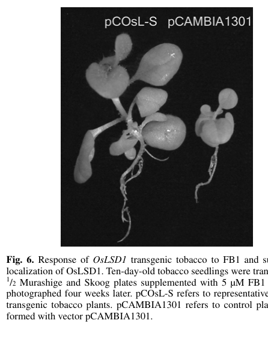

OsLSD1 (Q0J7V9; LOC_Os08g06280 / Os08g0159500) is the rice ortholog of the plant-specific LSD1 (LESION SIMULATING DISEASE 1) family of small C2C2-type zinc-finger proteins. Its core function is to act as a NEGATIVE regulator of plant programmed cell death (PCD) and of the hypersensitive response (HR): it restrains, rather than executes, cell death. Antisense suppression of OsLSD1 in rice produces a spontaneous lesion-mimic phenotype, increased pathogen-induced PR-1 expression, and an accelerated/intensified HR after inoculation with avirulent blast (Magnaporthe oryzae), exactly the runaway-cell-death signature expected of a loss-of-function in a cell-death brake (Wang et al. 2005, PMID:15915636). Consistent with the Arabidopsis paradigm, LSD1-like proteins are thought to set a ROS/PCD threshold and act antagonistically with the positive regulator LOL1. Secondarily, OsLSD1 is a POSITIVE regulator of callus differentiation/regeneration: 35S-driven overexpression accelerates differentiation of transformed rice calli (from ~7-10 days to ~3-5 days) and increases chlorophyll b content. The OsLSD1-GFP fusion localizes to the nucleus, consistent with a regulatory (rather than catalytic) role in nuclear protein complexes controlling cell-death commitment. The three conserved C2C2 motifs are zinc-finger motifs (the protein is named "Putative zinc finger LSD1"), implying zinc-ion binding, though direct biochemical demonstration of metal binding for the rice protein is lacking. Note that this rice OsLSD1 is unrelated to the mammalian lysine-specific demethylase LSD1/KDM1A (a name collision only).
| GO Term | Evidence | Action | Reason |
|---|---|---|---|
|
GO:0006952
defense response
|
IEA
GO_REF:0000043 |
MARK AS OVER ANNOTATED |
Summary: SPKW (GO_REF:0000043) annotation derived from the UniProt keyword "Plant defense"; snapshot-only, removed in the current GOA release. OsLSD1 acts in the defense/HR context, but its specific role is to NEGATIVELY regulate the defense response, not to execute defense directly.
Reason: GOA's removal of this keyword-derived annotation was JUSTIFIED. "Defense response" is a broad parent term, and as a bare keyword annotation it both lacks specificity and conflates the direction of OsLSD1's role. The experimental evidence shows OsLSD1 RESTRAINS defense cell death: antisense (knockdown) plants show a lesion-mimic phenotype, increased PR-1 expression and an accelerated HR to avirulent blast, i.e. de-repressed defense responses [PMID:15915636]. The current (2026) GOA already captures this precisely and direction-aware with the IMP term "negative regulation of defense response" (GO:0031348). The generic "defense response" SPKW term therefore adds no information beyond the retained curated annotation and risks implying OsLSD1 is a positive defense effector; its removal is appropriate.
Supporting Evidence:
PMID:15915636
plants exhibited lesion mimic phenotype, increased expression of PR-1 mRNA, and
file:ORYSJ/LSD1/LSD1-deep-research-falcon.md
antisense suppression of OsLSD1 produced a **lesion mimic phenotype** and **accelerated HR cell death** upon inoculation with avirulent blast isolates, along with **increased PR-1 mRNA**—consistent with OsLSD1 functioning as a **negative regulator of PCD/HR-like cell death**.
|
|
GO:0009626
plant-type hypersensitive response
|
IEA
GO_REF:0000043 |
MODIFY |
Summary: SPKW (GO_REF:0000043) annotation derived from the UniProt keyword "Hypersensitive response"; snapshot-only, removed in the current GOA release. This term implies OsLSD1 EXECUTES the HR, whereas the evidence shows it is a NEGATIVE regulator that restrains the HR.
Reason: GOA's removal of this annotation was JUSTIFIED, and the term as stated is a regulatory conflation. Annotating OsLSD1 to "plant-type hypersensitive response" (the cell-death process itself) implies the protein carries out / promotes the HR. The experimental data show the opposite directionality: silencing OsLSD1 ACCELERATES and intensifies the HR (a runaway-cell-death loss-of-function phenotype), and the UniProt FUNCTION statement explicitly describes OsLSD1 as a "Negative regulator of programmed cell death and hypersensitive response (HR)" [PMID:15915636]. The correct, direction-aware term is "negative regulation of plant-type hypersensitive response" (GO:0034051), which is exactly what the current GOA retains as an IMP annotation. The SPKW term should therefore be replaced by GO:0034051 rather than dropped silently.
Proposed replacements:
negative regulation of plant-type hypersensitive response
Supporting Evidence:
PMID:15915636
plants exhibited lesion mimic phenotype, increased expression of PR-1 mRNA, and
file:ORYSJ/LSD1/LSD1-deep-research-falcon.md
OsLSD1 was identified specifically in this conceptual framework: a rice functional homolog of Arabidopsis LSD1 that participates in HR/PCD regulation.
|
|
GO:0030154
cell differentiation
|
IEA
GO_REF:0000043 |
MODIFY |
Summary: SPKW (GO_REF:0000043) annotation derived from the UniProt keyword "Differentiation"; snapshot-only, removed in the current GOA release. OsLSD1 is not a general cell-fate / differentiation factor; it specifically PROMOTES callus differentiation/regeneration in tissue culture, so a bare "cell differentiation" process term mis-frames its role.
Reason: GOA's removal of this generic keyword-derived term was JUSTIFIED. "Cell differentiation" (GO:0030154) is a very broad developmental process term and, as a bare keyword annotation, it neither captures the direction (OsLSD1 positively regulates differentiation) nor the specific context (callus differentiation/regeneration). The experimental basis is that 35S overexpression of OsLSD1 accelerates callus differentiation in transformed rice tissue, and the authors conclude OsLSD1 "plays a positive role in callus differentiation" [PMID:15915636]. The appropriate direction-aware term is "positive regulation of cell differentiation" (GO:0045597); the current GOA already retains the parent regulatory term "regulation of cell differentiation" (GO:0045595, IMP). The flat process term should be replaced rather than kept.
Proposed replacements:
positive regulation of cell differentiation
Supporting Evidence:
PMID:15915636
accelerated callus differentiation in transformed rice tissues and increased
file:ORYSJ/LSD1/LSD1-deep-research-falcon.md
These data support a model in which OsLSD1 has a **dual role**: restraining PCD while **promoting differentiation/regeneration** in tissue culture contexts.
|
|
GO:0005634
nucleus
|
IEA
GO_REF:0000044 |
ACCEPT |
Summary: IEA annotation from the UniProt subcellular-location vocabulary mapping (GO_REF:0000044). Nuclear localization is directly confirmed in rice/tobacco by GFP imaging.
Reason: Correct and strongly supported by direct experimental evidence: the OsLSD1-GFP fusion protein localizes to the nucleus, and the UniProt SUBCELLULAR LOCATION is "Nucleus" [PMID:15915636]. Nuclear localization is consistent with a regulatory role in nuclear protein complexes controlling PCD/HR commitment and differentiation. The IEA duplicates the experimental TAS annotation to the same term, which is acceptable.
Supporting Evidence:
PMID:15915636
OsLSD1 green fluorescent protein fusion protein was located in the nucleus of
|
|
GO:0005634
nucleus
|
TAS
PMID:15915636 OsLSD1, a rice zinc finger protein, regulates programmed cel... |
ACCEPT |
Summary: TAS annotation citing the primary rice study (Wang et al. 2005), reporting nuclear localization of the OsLSD1-GFP fusion.
Reason: Directly supported by the cited primary reference: Wang et al. reported that the OsLSD1 green fluorescent protein fusion protein was located in the nucleus of tobacco cells [PMID:15915636]. This is the core cellular-component annotation for OsLSD1 and is consistent with its function as a nuclear regulator of cell death and differentiation.
Supporting Evidence:
PMID:15915636
OsLSD1 green fluorescent protein fusion protein was located in the nucleus of
|
|
GO:0031348
negative regulation of defense response
|
IMP
PMID:15915636 OsLSD1, a rice zinc finger protein, regulates programmed cel... |
ACCEPT |
Summary: IMP annotation: OsLSD1 negatively regulates the defense response, demonstrated by knockdown (antisense) phenotypes - de-repressed PR-1 expression and accelerated HR.
Reason: This is a core function and is well supported by direct loss-of-function evidence in rice. Antisense (knockdown) OsLSD1 plants display a lesion-mimic phenotype, increased PR-1 mRNA, and an accelerated hypersensitive response to avirulent blast isolates - the classic de-repressed-defense signature expected when a negative regulator of the defense response is removed [PMID:15915636]. The UniProt FUNCTION statement summarizes OsLSD1 as a negative regulator of PCD and HR. The term is at an appropriate level of specificity and direction.
Supporting Evidence:
PMID:15915636
plants exhibited lesion mimic phenotype, increased expression of PR-1 mRNA, and
file:ORYSJ/LSD1/LSD1-deep-research-falcon.md
antisense suppression of OsLSD1 produced a **lesion mimic phenotype** and **accelerated HR cell death** upon inoculation with avirulent blast isolates, along with **increased PR-1 mRNA**—consistent with OsLSD1 functioning as a **negative regulator of PCD/HR-like cell death**.
|
|
GO:0034051
negative regulation of plant-type hypersensitive response
|
IMP
PMID:15915636 OsLSD1, a rice zinc finger protein, regulates programmed cel... |
ACCEPT |
Summary: IMP annotation: OsLSD1 negatively regulates the plant-type hypersensitive response, shown by the accelerated/intensified HR in antisense-silenced plants.
Reason: Core function, directly supported. Silencing OsLSD1 produces an accelerated and intensified HR to avirulent blast, and a spontaneous lesion-mimic phenotype - i.e. removing OsLSD1 releases the brake on the HR cell-death program [PMID:15915636]. This direction-aware term correctly captures OsLSD1's role as a restraint on (not executor of) the HR, and is the appropriate replacement for the retired bare SPKW "plant-type hypersensitive response" term above. Accept as a core annotation.
Supporting Evidence:
PMID:15915636
plants exhibited lesion mimic phenotype, increased expression of PR-1 mRNA, and
PMID:15915636
this study, a rice (Oryza sativa) functional homolog of LSD1, designated OsLSD1,
|
|
GO:0045595
regulation of cell differentiation
|
IMP
PMID:15915636 OsLSD1, a rice zinc finger protein, regulates programmed cel... |
ACCEPT |
Summary: IMP annotation: OsLSD1 regulates cell differentiation, based on overexpression accelerating callus differentiation/regeneration. The demonstrated direction is positive (promoting differentiation).
Reason: Supported by direct gain-of-function evidence: 35S-driven OsLSD1 overexpression accelerated callus differentiation in transformed rice tissues, and the authors conclude OsLSD1 plays a positive role in callus differentiation [PMID:15915636]. The curated term "regulation of cell differentiation" (GO:0045595) is correct as the direction-neutral parent; the experimentally demonstrated direction is captured more precisely by the proposed "positive regulation of cell differentiation" (GO:0045597, see the MODIFY of the retired SPKW term and proposed_new_terms). This is a genuine but secondary (non-cell-death) function of OsLSD1; accept the existing curated term.
Supporting Evidence:
PMID:15915636
accelerated callus differentiation in transformed rice tissues and increased
file:ORYSJ/LSD1/LSD1-deep-research-falcon.md
These data support a model in which OsLSD1 has a **dual role**: restraining PCD while **promoting differentiation/regeneration** in tissue culture contexts.
|
|
GO:0043069
negative regulation of programmed cell death
|
IMP
PMID:15915636 OsLSD1, a rice zinc finger protein, regulates programmed cel... |
NEW |
Summary: OsLSD1 is a negative regulator of programmed cell death (PCD) more broadly than just the HR. This is the unifying core function of the LSD1 family and is not explicitly captured by the current GOA process terms (which are restricted to defense response and the HR).
Reason: The current GOA captures negative regulation of the defense response (GO:0031348) and of the HR (GO:0034051), but the LSD1 family's defining role is the more general negative regulation of programmed cell death, of which HR cell death is one trigger. OsLSD1 was identified as a functional homolog of Arabidopsis LSD1, whose antagonism with LOL1 controls oxidative-stress / ROS-associated PCD, and silencing OsLSD1 produces a spontaneous lesion-mimic (runaway-PCD) phenotype independent of pathogen, while ectopic overexpression in tobacco confers tolerance to the PCD-eliciting toxin fumonisin B1 [PMID:15915636]. The UniProt FUNCTION statement describes OsLSD1 as a "Negative regulator of programmed cell death and hypersensitive response". GO:0043069 is the appropriate, direction-aware term; IMP is justified by the antisense lesion-mimic phenotype.
Supporting Evidence:
PMID:15915636
plants exhibited lesion mimic phenotype, increased expression of PR-1 mRNA, and
file:ORYSJ/LSD1/LSD1-deep-research-falcon.md
Primary experimental work in rice indicates OsLSD1 acts largely as a **negative regulator of PCD**
|
|
GO:0008270
zinc ion binding
|
ISS
PMID:15915636 OsLSD1, a rice zinc finger protein, regulates programmed cel... |
NEW |
Summary: OsLSD1 contains three conserved C2C2-type zinc-finger motifs and is named "Putative zinc finger LSD1", implying zinc-ion binding. The current GOA has no molecular-function term for OsLSD1.
Reason: The current (2026) GOA release contains NO molecular-function annotation for OsLSD1 at all - only process and component terms. The protein's defining structural feature is its set of three internally conserved C2C2-type (CXXC...CXXC) zinc-finger motifs, shared with Arabidopsis LSD1/LOL1; the UniProt RecName includes "Putative zinc finger LSD1" and three "Putative zinc finger" regions are annotated on the sequence [PMID:15915636]. Zinc coordination by C2C2 motifs is the expected molecular function and is the most informative MF that can be assigned. Evidence is ISS (inferred from sequence/structural similarity to the characterized LSD1/LOL1 zinc fingers); direct metal-binding biochemistry for the rice protein has not been reported, so this is proposed as a sequence-based MF rather than IDA.
Supporting Evidence:
PMID:15915636
The Arabidopsis LSD1 and LOL1 proteins both contain three conserved zinc finger
file:ORYSJ/LSD1/LSD1-deep-research-falcon.md
three internally conserved C2C2-type zinc-finger motifs
|
Q: Does rice OsLSD1 directly bind zinc via its three C2C2 motifs, and is metal coordination required for its cell-death-suppressing activity?
Suggested experts: Chaozu He
Q: Is OsLSD1's negative regulation of PCD exerted through transcriptional control in the nucleus, or through cytoplasmic/scaffolding interactions (e.g. with metacaspases OsMC1-3), and does it act antagonistically with a rice LOL1 ortholog as in Arabidopsis?
Suggested experts: Jeffery L. Dangl
Q: Is the positive effect of OsLSD1 on callus differentiation mechanistically separable from its negative regulation of cell death, or a downstream consequence of suppressing culture-associated PCD?
Suggested experts: Chaozu He
Experiment: Generate clean CRISPR/Cas9 loss-of-function oslsd1 alleles (rather than antisense) and quantify spontaneous lesion formation, ROS accumulation, PR-gene expression and HR kinetics after avirulent blast challenge, under controlled light/temperature.
Hypothesis: Null oslsd1 plants show light-conditional runaway cell death and an accelerated HR, confirming OsLSD1 as a negative regulator of PCD/HR (rather than an HR effector).
Type: reverse-genetics / cell-death phenotyping
Experiment: Express and purify recombinant OsLSD1 and measure zinc binding (e.g. by ICP-MS, PAR competition or isothermal titration calorimetry) for wild-type and Cys-to-Ser zinc-finger mutants.
Hypothesis: OsLSD1 binds zinc stoichiometrically via its C2C2 motifs, and disrupting the fingers abolishes zinc binding and cell-death-suppressing function.
Type: in vitro metal-binding / structure-function assay
Experiment: Test for genetic and physical antagonism between OsLSD1 and a candidate rice LOL1 ortholog (and with OsMC1/OsMC2/OsMC3 metacaspases) using double mutants and in planta interaction assays (BiFC, co-IP) in the context of PCD induction.
Hypothesis: OsLSD1 sets a ROS/PCD threshold by antagonizing a positive regulator (LOL1-like) and by modulating metacaspase activity, paralleling the Arabidopsis LSD1/LOL1 model.
Type: genetic epistasis and protein-interaction analysis
The research report should be a detailed narrative explaining the function, biological processes, and localization of the gene product. Citations should be given for all claims.
You should prioritize authoritative reviews and primary scientific literature when conducting research. You can supplement
this with annotations you find in gene/protein databases, but these can be outdated or inaccurate.
We are specifically interested in the primary function of the gene - for enzymes, what reaction is catalyzed, and what is the substrate specificity? For transporters, what is the substrate? For structural proteins or adapters, what is the broader structural role? For signaling molecules, what is the role in the pathway.
We are interested in where in or outside the cell the gene product carries out its function.
We are also interested in the signaling or biochemical pathways in which the gene functions. We are less interested in broad pleiotropic effects, except where these elucidate the precise role.
Include evidence where possible. We are interested in both experimental evidence as well as inference from structure, evolution, or bioinformatic analysis. Precise studies should be prioritized over high-throughput, where available.
Rice OsLSD1 (LESION SIMULATING DISEASE 1-like; “Protein LSD1”) is a plant-specific, small C2C2 zinc-finger protein that functions as a context-dependent regulator of programmed cell death (PCD) and is implicated in blast disease responses and tissue culture/callus differentiation. Primary experimental work in rice indicates OsLSD1 acts largely as a negative regulator of PCD, while promoting callus differentiation/regeneration, and its manipulation can alter defense marker expression and resistance phenotypes. OsLSD1 is also positioned mechanistically within PCD signaling via protein–protein interactions with rice type I metacaspases. A recent (2024) rice GWAS nominates OsLSD1 as a candidate gene affecting callus induction rate, reinforcing potential relevance to transformation/regeneration pipelines. (wang2005oslsd1arice pages 1-2, wang2005oslsd1arice pages 2-4, huang2015stressresponsiveexpressionsubcellular pages 13-15, huang2015stressresponsiveexpressionsubcellular pages 1-3, song2024acyclingene pages 2-4)
The symbol “LSD1” is ambiguous across biology (notably, in mammals it often refers to lysine-specific demethylase 1/KDM1A, a large FAD-dependent amine oxidase). The rice protein requested here (UniProt Q0J7V9) matches the plant “LESION SIMULATING DISEASE 1” class, which is small (~143 aa) and defined by multiple C2C2 zinc-finger motifs, not an amine-oxidase/demethylase domain. (wang2005oslsd1arice pages 1-2, wang2005oslsd1arice pages 2-4)
In plant immunity, the hypersensitive response (HR) is a localized cell death program associated with defense signaling, often occurring alongside a burst of reactive oxygen species (ROS) and induction of pathogenesis-related (PR) genes. Lesion mimic phenotypes (spontaneous lesions without pathogens) are frequently used to dissect HR/PCD pathways. OsLSD1 was identified specifically in this conceptual framework: a rice functional homolog of Arabidopsis LSD1 that participates in HR/PCD regulation. (wang2005oslsd1arice pages 1-2)
Work in Arabidopsis provides a widely used conceptual model for LSD1-like proteins: the plant-specific zinc-finger proteins LSD1 (negative regulator) and LOL1 (positive regulator) antagonistically regulate ROS-associated cell death and may set a threshold for commitment to PCD, partly via effects on antioxidant systems such as Cu/Zn superoxide dismutases. Although these mechanistic models were built in Arabidopsis, OsLSD1 is considered part of the same plant-specific family and is frequently interpreted through this ROS/PCD-threshold lens. (epple2003antagonisticcontrolof pages 5-6, epple2003antagonisticcontrolof pages 4-5)
In rice, OsLSD1 encodes a predicted protein of 143 amino acids (~14.8 kDa) with three internally conserved C2C2-type zinc-finger motifs described by the consensus CxxCxxLLMYxxGAxSVxCxxC. (wang2005oslsd1arice pages 1-2, wang2005oslsd1arice pages 2-4)
Wang et al. report:
* cDNA length 988 bp with 432 bp ORF (AY525368). (wang2005oslsd1arice pages 2-4)
* Genomic locus length 2,971 bp, consisting of six exons and five introns. (wang2005oslsd1arice pages 2-4)
* OsLSD1 behaves as a single-copy gene by Southern hybridization across multiple cultivars. (wang2005oslsd1arice pages 2-4, wang2005oslsd1arice pages 1-2)
An OsLSD1–GFP fusion was reported as nuclear localized in tobacco cells, consistent with a role in transcriptional regulation or nuclear protein complexes controlling PCD and differentiation. (wang2005oslsd1arice pages 1-2)
In rice, antisense suppression of OsLSD1 produced a lesion mimic phenotype and accelerated HR cell death upon inoculation with avirulent blast isolates, along with increased PR-1 mRNA—consistent with OsLSD1 functioning as a negative regulator of PCD/HR-like cell death. (wang2005oslsd1arice pages 1-2, wang2005oslsd1arice pages 2-4)
Environmental modulation (light/temperature) is reported for lesion phenotypes, highlighting that OsLSD1-linked cell death outcomes are condition-dependent. (wang2005oslsd1arice pages 6-7)
OsLSD1 overexpression promotes callus differentiation/regeneration:
* Differentiation time of hygromycin-resistant calli decreased from ~7–10 days (control) to ~3–5 days with OsLSD1 overexpression. (wang2005oslsd1arice pages 2-4)
* Overexpression increased chlorophyll b content and altered chlorophyll composition; Table 1 reports chlorophyll quantities (mg/g fresh weight) across representative lines (e.g., line S9 chlorophyll b 0.444 ± 0.004 vs WT 0.209 ± 0.006). (wang2005oslsd1arice pages 2-4)
These data support a model in which OsLSD1 has a dual role: restraining PCD while promoting differentiation/regeneration in tissue culture contexts. (wang2005oslsd1arice pages 1-2, wang2005oslsd1arice pages 2-4)
OsLSD1 is repeatedly linked to rice blast disease responses:
* In the original rice study, both sense (overexpression) and antisense OsLSD1 transgenic rice exhibited significantly enhanced resistance to a virulent blast isolate, though via potentially different physiological routes (antisense associated with heightened HR/defense gene induction; overexpression associated with growth/chlorophyll changes and toxin tolerance). (wang2005oslsd1arice pages 1-2, wang2005oslsd1arice pages 2-4, wang2005oslsd1arice pages 6-7)
* A subsequent rice ZFP/blast interaction analysis lists OsLSD1 (LOC_Os08g06280) among ZFP families associated with defense against Magnaporthe oryzae, and reports LSD1-family expression was repressed by M. oryzae inoculation in their dataset. (li2014identificationandnetwork pages 1-2)
Plant metacaspases are caspase-like proteases implicated in PCD regulation. In rice:
* Yeast two-hybrid assays showed type I metacaspases OsMC1/OsMC2/OsMC3 interact with OsLSD1 (and OsLSD3) but not with OsLSD2/OsLOL1/OsLOL2, positioning OsLSD1 in metacaspase-linked PCD signaling. (huang2015stressresponsiveexpressionsubcellular pages 13-15)
* OsMC3 was reported to interact only with OsLSD1 in one summary of interactions. (huang2015stressresponsiveexpressionsubcellular pages 1-3)
The authors further propose these interactions may occur in the nucleus (supported indirectly by nuclear localization of OsMC1 and prior nuclear localization evidence for an LSD1 homolog), though in vivo confirmation is explicitly noted as needed. (huang2015stressresponsiveexpressionsubcellular pages 13-15)
OsLSD1 expression is light-induced / dark-suppressed:
* Dark treatment reduced OsLSD1 transcripts at 4 h and 24 h in darkness; re-exposure to light restored transcript accumulation within ~4–5 h. (wang2005oslsd1arice pages 2-4)
RT-PCR indicated OsLSD1 expression is detectable constitutively in root, stem, and leaf (as reported in Wang et al.). (wang2005oslsd1arice pages 2-4)
A 2024 rice GWAS on callus induction rate (CIR)—important for transformation and breeding pipelines—analyzed:
* 368 rice accessions
* 994,188 SNPs
* Identified 104 significant SNP loci
* Nominated 13 high-confidence candidate genes, including OsLSD1, citing prior evidence for roles in callus differentiation. (song2024acyclingene pages 2-4)
This is the strongest tool-accessible 2024 linkage connecting natural variation near OsLSD1 to tissue culture performance, although the paper did not functionally validate OsLSD1 directly. (song2024acyclingene pages 2-4)
A focused 2019 review (still widely cited) argues LSD1/EDS1/PAD4 modules are attractive engineering targets because they coordinate ROS and hormone signaling (SA/ET) and acclimation responses, and highlights genome editing (e.g., CRISPR/Cas9) as a practical route for crop improvement—while emphasizing environment-dependent and pleiotropic outcomes that require careful tuning. (bernacki2019biotechnologicalpotentialof pages 1-3)
Rice-specific data in that review include that LSD1 antisense rice shows PR1 upregulation and lesion phenotype consistent with LSD1 as a negative regulator of cell death, and that expressing rice LSD1 in tobacco enhanced mycotoxin resistance. (bernacki2019biotechnologicalpotentialof pages 9-11)
Because OsLSD1 overexpression materially shortens callus differentiation time (7–10 days to 3–5 days) and is now implicated by GWAS as a CIR-associated candidate, OsLSD1 is conceptually relevant for:
* optimizing Agrobacterium-mediated transformation pipelines (callus induction/differentiation efficiency), and
* improving genotype-independent tissue culture response, a known bottleneck in rice functional genomics and breeding. (wang2005oslsd1arice pages 2-4, song2024acyclingene pages 2-4)
OsLSD1 manipulation affects blast resistance phenotypes in transgenic experiments, and authors explicitly proposed OsLSD1 as a candidate for engineering crops with useful traits. (wang2005oslsd1arice pages 6-7)
However, expert synthesis emphasizes that LSD1-like regulation of ROS/PCD is highly context-dependent (environment, stress combinations), and engineering strategies must avoid runaway cell death and yield penalties by controlling expression level/tissue specificity or by targeting network partners. (bernacki2019biotechnologicalpotentialof pages 1-3, epple2003antagonisticcontrolof pages 5-6)
Arabidopsis data support the idea that LSD1-like proteins (LSD1 vs LOL1) act antagonistically to gate ROS-associated PCD, potentially functioning like competing transcriptional regulators or scaffold proteins and establishing a threshold for death commitment. This framework is widely invoked for interpreting OsLSD1-like proteins in crops. (epple2003antagonisticcontrolof pages 5-6, epple2003antagonisticcontrolof pages 4-5)
The crop-biotech review argues LSD1/EDS1/PAD4 nodes can affect PCD, immunity, abiotic stress acclimation, cell wall modification, yield/biomass traits, and water-use efficiency, and are thus candidates for breeding and genome editing. It emphasizes ortholog presence in crops (including rice) and stresses the importance of balancing resistance with growth given environment-dependence. (bernacki2019biotechnologicalpotentialof pages 1-3)
A representative figure from the rice OsLSD1 primary study shows FB1 (fumonisin B1) treatment outcomes in transgenic tobacco seedlings, illustrating the reported phenotype of enhanced tolerance associated with OsLSD1 overexpression (note: the paper states GFP localization images were “data not shown”). (wang2005oslsd1arice media ab6a47f9)
| Claim/Aspect | Key evidence/details | Source | DOI/URL | Pub date |
|---|---|---|---|---|
| Identity / disambiguation | Rice OsLSD1 is a plant-specific small zinc-finger protein, not the mammalian LSD1/KDM1A demethylase. Cloned as GenBank AY525368 from Oryza sativa; cDNA 988 bp, ORF 432 bp, predicted protein 143 aa (~14.8 kDa), mapped to chromosome 8 (PAC clone P0672D01). Rice literature also links OsLSD1 to LOC_Os08g06280 and review/table evidence links the family entry to Os08g0159500. (wang2005oslsd1arice pages 2-4, wang2005oslsd1arice pages 1-2, kang2021ricelesionmimic pages 4-4, li2014identificationandnetwork pages 1-2) | Wang 2005, Molecular Plant-Microbe Interactions; Li 2014, POJ; Kang 2021, Plants | https://doi.org/10.1094/mpmi-18-0375 ; https://doi.org/10.3316/informit.897038318452468 ; https://doi.org/10.3390/plants10081598 | May 2005; 2014; Aug 2021 |
| Domains / family features | OsLSD1 contains three internally conserved C2C2-type zinc finger / LSD1-like domains with consensus motif reported as CxxCxxLLMYxxGAxSVxCxxC; it shows 58% identity to Arabidopsis LSD1 and 85% identity to Arabidopsis LOL1. Rice lesion-mimic review classifies it as a C2C2-type zinc finger protein. (wang2005oslsd1arice pages 1-2, kang2021ricelesionmimic pages 4-4) | Wang 2005, Molecular Plant-Microbe Interactions; Kang 2021, Plants | https://doi.org/10.1094/mpmi-18-0375 ; https://doi.org/10.3390/plants10081598 | May 2005; Aug 2021 |
| Subcellular localization | OsLSD1-GFP localized to the nucleus in tobacco cells/root tips, supporting nuclear function. A later metacaspase study notes OsMC1–OsLSD1 interaction may occur in the nucleus and cites nucleus-localized LSD1 homolog evidence. (wang2005oslsd1arice pages 1-2, huang2015stressresponsiveexpressionsubcellular pages 13-15) | Wang 2005, Molecular Plant-Microbe Interactions; Huang 2015, International Journal of Molecular Sciences | https://doi.org/10.1094/mpmi-18-0375 ; https://doi.org/10.3390/ijms160716216 | May 2005; Jul 2015 |
| Function in programmed cell death (PCD) | Core interpretation: OsLSD1 is a negative regulator of plant PCD. Antisense suppression produced lesion mimic phenotype, increased PR-1 mRNA, and accelerated hypersensitive response to avirulent blast isolates; overexpression in tobacco enhanced tolerance to the PCD-inducing toxin fumonisin B1 (FB1). Reviews summarize OsLSD1 as regulating PCD and hypersensitive response. (wang2005oslsd1arice pages 1-2, wang2005oslsd1arice pages 2-4, wang2005oslsd1arice pages 6-7, huang2015stressresponsiveexpressionsubcellular pages 1-3, kang2021ricelesionmimic pages 4-4) | Wang 2005, Molecular Plant-Microbe Interactions; Huang 2015, International Journal of Molecular Sciences; Kang 2021, Plants | https://doi.org/10.1094/mpmi-18-0375 ; https://doi.org/10.3390/ijms160716216 ; https://doi.org/10.3390/plants10081598 | May 2005; Jul 2015; Aug 2021 |
| Callus differentiation / regeneration | Overexpression of OsLSD1 accelerated callus differentiation and plant regeneration. In transformed rice calli, differentiation time decreased from 7–10 days in vector controls to 3–5 days in OsLSD1-overexpression lines. Authors conclude OsLSD1 plays a positive role in callus differentiation. (wang2005oslsd1arice pages 1-2, wang2005oslsd1arice pages 2-4) | Wang 2005, Molecular Plant-Microbe Interactions | https://doi.org/10.1094/mpmi-18-0375 | May 2005 |
| Disease resistance / blast interaction | OsLSD1 is linked to rice blast defense. In Wang et al., both sense and antisense transgenics showed significantly enhanced resistance to a virulent blast isolate; antisense plants also showed faster defense/HR responses to avirulent blast. Expression/network analysis later listed OsLSD1 (LOC_Os08g06280) among rice ZFP genes associated with defense against Magnaporthe oryzae, and reported the LSD1 family was repressed after inoculation in their expression dataset. (wang2005oslsd1arice pages 1-2, wang2005oslsd1arice pages 2-4, wang2005oslsd1arice pages 6-7, li2014identificationandnetwork pages 1-2) | Wang 2005, Molecular Plant-Microbe Interactions; Li 2014, POJ | https://doi.org/10.1094/mpmi-18-0375 ; https://doi.org/10.3316/informit.897038318452468 | May 2005; 2014 |
| Interaction partners | Yeast two-hybrid assays showed OsMC1, OsMC2, and OsMC3 interact with OsLSD1 and OsLSD3, but not with OsLSD2/OsLOL1/OsLOL2; OsMC3 only interacted with OsLSD1 in one summary. N- and C-terminal regions of OsMC1 also interacted with OsLSD1. These data place OsLSD1 in metacaspase-linked PCD signaling. (huang2015stressresponsiveexpressionsubcellular pages 13-15, huang2015stressresponsiveexpressionsubcellular pages 1-3) | Huang 2015, International Journal of Molecular Sciences | https://doi.org/10.3390/ijms160716216 | Jul 2015 |
| Expression regulation | OsLSD1 transcript abundance is light-induced / dark-suppressed: after 24 h dark treatment, transcript levels decreased markedly by 4 h and 24 h in darkness, then recovered after re-exposure to light (4–5 h). RT-PCR detected constitutive expression in root, stem, and leaf. (wang2005oslsd1arice pages 1-2, wang2005oslsd1arice pages 2-4) | Wang 2005, Molecular Plant-Microbe Interactions | https://doi.org/10.1094/mpmi-18-0375 | May 2005 |
| Recent GWAS association (2024) | A 2024 rice GWAS for callus induction rate (CIR) used 368 accessions and 994,188 SNPs, identifying 104 significant SNPs and 13 candidate genes. OsLSD1 was nominated as a candidate based on annotation/transcriptome overlap, reinforcing prior evidence that OsLSD1 contributes to callus differentiation, although this study did not functionally validate OsLSD1 directly. (song2024acyclingene pages 2-4) | Song 2024, Rice | https://doi.org/10.1186/s12284-024-00742-8 | Oct 2024 |
Table: This table compiles key evidence for rice OsLSD1/Protein LSD1 (UniProt Q0J7V9; LOC_Os08g06280; Os08g0159500), emphasizing identity verification, molecular features, biological roles, and recent 2024 genetic association data. It is useful as a compact evidence map linking specific claims to primary and review sources.
References
(wang2005oslsd1arice pages 1-2): Lijuan Wang, Zhongyou Pei, Yingchuan Tian, and Chaozu He. Oslsd1, a rice zinc finger protein, regulates programmed cell death and callus differentiation. Molecular plant-microbe interactions : MPMI, 18 5:375-84, May 2005. URL: https://doi.org/10.1094/mpmi-18-0375, doi:10.1094/mpmi-18-0375. This article has 196 citations.
(wang2005oslsd1arice pages 2-4): Lijuan Wang, Zhongyou Pei, Yingchuan Tian, and Chaozu He. Oslsd1, a rice zinc finger protein, regulates programmed cell death and callus differentiation. Molecular plant-microbe interactions : MPMI, 18 5:375-84, May 2005. URL: https://doi.org/10.1094/mpmi-18-0375, doi:10.1094/mpmi-18-0375. This article has 196 citations.
(huang2015stressresponsiveexpressionsubcellular pages 13-15): Lei Huang, Huijuan Zhang, Yongbo Hong, Shixia Liu, Dayong Li, and Fengming Song. Stress-responsive expression, subcellular localization and protein–protein interactions of the rice metacaspase family. International Journal of Molecular Sciences, 16:16216-16241, Jul 2015. URL: https://doi.org/10.3390/ijms160716216, doi:10.3390/ijms160716216. This article has 59 citations.
(huang2015stressresponsiveexpressionsubcellular pages 1-3): Lei Huang, Huijuan Zhang, Yongbo Hong, Shixia Liu, Dayong Li, and Fengming Song. Stress-responsive expression, subcellular localization and protein–protein interactions of the rice metacaspase family. International Journal of Molecular Sciences, 16:16216-16241, Jul 2015. URL: https://doi.org/10.3390/ijms160716216, doi:10.3390/ijms160716216. This article has 59 citations.
(song2024acyclingene pages 2-4): Wenjing Song, Jian Zhang, Wenyu Lu, Siyi Liang, Hairong Cai, Yuanyuan Guo, Shiyi Chen, Jiafeng Wang, Tao Guo, Hong Liu, and Dehua Rao. A cyclin gene oscycb1;5 regulates seed callus induction in rice revealed by genome wide association study. Rice, Oct 2024. URL: https://doi.org/10.1186/s12284-024-00742-8, doi:10.1186/s12284-024-00742-8. This article has 1 citations and is from a peer-reviewed journal.
(li2014identificationandnetwork pages 1-2): WT Li, WL Chen, C Yang, J Wang, L Yang, and M He. Identification and network construction of zinc finger protein (zfp) genes involved in the rice-'magnaporthe oryzae'interaction. Unknown journal, 2014. URL: https://doi.org/10.3316/informit.897038318452468, doi:10.3316/informit.897038318452468.
(kang2021ricelesionmimic pages 4-4): Sang Gu Kang, Kyung Eun Lee, Mahendra Singh, Pradeep Kumar, and Mohammad Nurul Matin. Rice lesion mimic mutants (lmm): the current understanding of genetic mutations in the failure of ros scavenging during lesion formation. Plants, 10:1598, Aug 2021. URL: https://doi.org/10.3390/plants10081598, doi:10.3390/plants10081598. This article has 46 citations.
(epple2003antagonisticcontrolof pages 5-6): Petra Epple, Amanda A. Mack, Veronica R. F. Morris, and Jeffery L. Dangl. Antagonistic control of oxidative stress-induced cell death in arabidopsis by two related, plant-specific zinc finger proteins. Proceedings of the National Academy of Sciences of the United States of America, 100:6831-6836, May 2003. URL: https://doi.org/10.1073/pnas.1130421100, doi:10.1073/pnas.1130421100. This article has 237 citations and is from a highest quality peer-reviewed journal.
(epple2003antagonisticcontrolof pages 4-5): Petra Epple, Amanda A. Mack, Veronica R. F. Morris, and Jeffery L. Dangl. Antagonistic control of oxidative stress-induced cell death in arabidopsis by two related, plant-specific zinc finger proteins. Proceedings of the National Academy of Sciences of the United States of America, 100:6831-6836, May 2003. URL: https://doi.org/10.1073/pnas.1130421100, doi:10.1073/pnas.1130421100. This article has 237 citations and is from a highest quality peer-reviewed journal.
(wang2005oslsd1arice pages 6-7): Lijuan Wang, Zhongyou Pei, Yingchuan Tian, and Chaozu He. Oslsd1, a rice zinc finger protein, regulates programmed cell death and callus differentiation. Molecular plant-microbe interactions : MPMI, 18 5:375-84, May 2005. URL: https://doi.org/10.1094/mpmi-18-0375, doi:10.1094/mpmi-18-0375. This article has 196 citations.
(bernacki2019biotechnologicalpotentialof pages 1-3): Maciej Jerzy Bernacki, Weronika Czarnocka, Magdalena Szechyńska-Hebda, Ron Mittler, and Stanisław Karpiński. Biotechnological potential of lsd1, eds1, and pad4 in the improvement of crops and industrial plants. Plants, 8:290, Aug 2019. URL: https://doi.org/10.3390/plants8080290, doi:10.3390/plants8080290. This article has 22 citations.
(bernacki2019biotechnologicalpotentialof pages 9-11): Maciej Jerzy Bernacki, Weronika Czarnocka, Magdalena Szechyńska-Hebda, Ron Mittler, and Stanisław Karpiński. Biotechnological potential of lsd1, eds1, and pad4 in the improvement of crops and industrial plants. Plants, 8:290, Aug 2019. URL: https://doi.org/10.3390/plants8080290, doi:10.3390/plants8080290. This article has 22 citations.
(wang2005oslsd1arice media ab6a47f9): Lijuan Wang, Zhongyou Pei, Yingchuan Tian, and Chaozu He. Oslsd1, a rice zinc finger protein, regulates programmed cell death and callus differentiation. Molecular plant-microbe interactions : MPMI, 18 5:375-84, May 2005. URL: https://doi.org/10.1094/mpmi-18-0375, doi:10.1094/mpmi-18-0375. This article has 196 citations.

id: Q0J7V9
gene_symbol: LSD1
product_type: PROTEIN
status: COMPLETE
taxon:
id: NCBITaxon:39947
label: Oryza sativa subsp. japonica
description: >
OsLSD1 (Q0J7V9; LOC_Os08g06280 / Os08g0159500) is the rice ortholog of the plant-specific
LSD1 (LESION SIMULATING DISEASE 1) family of small C2C2-type zinc-finger proteins. Its core
function is to act as a NEGATIVE regulator of plant programmed cell death (PCD) and of the
hypersensitive response (HR): it restrains, rather than executes, cell death. Antisense
suppression of OsLSD1 in rice produces a spontaneous lesion-mimic phenotype, increased
pathogen-induced PR-1 expression, and an accelerated/intensified HR after inoculation with
avirulent blast (Magnaporthe oryzae), exactly the runaway-cell-death signature expected of a
loss-of-function in a cell-death brake (Wang et al. 2005, PMID:15915636). Consistent with the
Arabidopsis paradigm, LSD1-like proteins are thought to set a ROS/PCD threshold and act
antagonistically with the positive regulator LOL1. Secondarily, OsLSD1 is a POSITIVE regulator
of callus differentiation/regeneration: 35S-driven overexpression accelerates differentiation
of transformed rice calli (from ~7-10 days to ~3-5 days) and increases chlorophyll b content.
The OsLSD1-GFP fusion localizes to the nucleus, consistent with a regulatory (rather than
catalytic) role in nuclear protein complexes controlling cell-death commitment. The three
conserved C2C2 motifs are zinc-finger motifs (the protein is named "Putative zinc finger LSD1"),
implying zinc-ion binding, though direct biochemical demonstration of metal binding for the rice
protein is lacking. Note that this rice OsLSD1 is unrelated to the mammalian lysine-specific
demethylase LSD1/KDM1A (a name collision only).
existing_annotations:
# --- SPKW keyword-mapping annotations (GO_REF:0000043) ---
# Present in the Sept 2025 goa_uniprot_gcrp snapshot (go-db plant.ddb); REMOVED
# from the current (2026) GOA release when GOA retired the keyword2GO pipeline
# for cellular organisms. Reviewed retrospectively to assess whether removal was
# justified. These are the SPKW-derived process terms for OsLSD1, derived from the
# UniProt keywords "Plant defense", "Hypersensitive response" and "Differentiation".
- term:
id: GO:0006952
label: defense response
evidence_type: IEA
original_reference_id: GO_REF:0000043
retired: true
qualifier: involved_in
review:
summary: >
SPKW (GO_REF:0000043) annotation derived from the UniProt keyword "Plant defense";
snapshot-only, removed in the current GOA release. OsLSD1 acts in the defense/HR
context, but its specific role is to NEGATIVELY regulate the defense response, not to
execute defense directly.
action: MARK_AS_OVER_ANNOTATED
reason: >
GOA's removal of this keyword-derived annotation was JUSTIFIED. "Defense response" is a
broad parent term, and as a bare keyword annotation it both lacks specificity and conflates
the direction of OsLSD1's role. The experimental evidence shows OsLSD1 RESTRAINS defense
cell death: antisense (knockdown) plants show a lesion-mimic phenotype, increased PR-1
expression and an accelerated HR to avirulent blast, i.e. de-repressed defense responses
[PMID:15915636]. The current (2026) GOA already captures this precisely and direction-aware
with the IMP term "negative regulation of defense response" (GO:0031348). The generic
"defense response" SPKW term therefore adds no information beyond the retained curated
annotation and risks implying OsLSD1 is a positive defense effector; its removal is
appropriate.
supported_by:
- reference_id: PMID:15915636
supporting_text: "plants exhibited lesion mimic phenotype, increased expression of PR-1 mRNA, and"
- reference_id: file:ORYSJ/LSD1/LSD1-deep-research-falcon.md
supporting_text: "antisense suppression of OsLSD1 produced a **lesion mimic phenotype** and **accelerated HR cell death** upon inoculation with avirulent blast isolates, along with **increased PR-1 mRNA**—consistent with OsLSD1 functioning as a **negative regulator of PCD/HR-like cell death**."
- term:
id: GO:0009626
label: plant-type hypersensitive response
evidence_type: IEA
original_reference_id: GO_REF:0000043
retired: true
qualifier: involved_in
review:
summary: >
SPKW (GO_REF:0000043) annotation derived from the UniProt keyword "Hypersensitive response";
snapshot-only, removed in the current GOA release. This term implies OsLSD1 EXECUTES the HR,
whereas the evidence shows it is a NEGATIVE regulator that restrains the HR.
action: MODIFY
reason: >
GOA's removal of this annotation was JUSTIFIED, and the term as stated is a regulatory
conflation. Annotating OsLSD1 to "plant-type hypersensitive response" (the cell-death
process itself) implies the protein carries out / promotes the HR. The experimental data
show the opposite directionality: silencing OsLSD1 ACCELERATES and intensifies the HR
(a runaway-cell-death loss-of-function phenotype), and the UniProt FUNCTION statement
explicitly describes OsLSD1 as a "Negative regulator of programmed cell death and
hypersensitive response (HR)" [PMID:15915636]. The correct, direction-aware term is
"negative regulation of plant-type hypersensitive response" (GO:0034051), which is exactly
what the current GOA retains as an IMP annotation. The SPKW term should therefore be
replaced by GO:0034051 rather than dropped silently.
proposed_replacement_terms:
- id: GO:0034051
label: negative regulation of plant-type hypersensitive response
supported_by:
- reference_id: PMID:15915636
supporting_text: "plants exhibited lesion mimic phenotype, increased expression of PR-1 mRNA, and"
- reference_id: file:ORYSJ/LSD1/LSD1-deep-research-falcon.md
supporting_text: "OsLSD1 was identified specifically in this conceptual framework: a rice functional homolog of Arabidopsis LSD1 that participates in HR/PCD regulation."
- term:
id: GO:0030154
label: cell differentiation
evidence_type: IEA
original_reference_id: GO_REF:0000043
retired: true
qualifier: involved_in
review:
summary: >
SPKW (GO_REF:0000043) annotation derived from the UniProt keyword "Differentiation";
snapshot-only, removed in the current GOA release. OsLSD1 is not a general cell-fate /
differentiation factor; it specifically PROMOTES callus differentiation/regeneration in
tissue culture, so a bare "cell differentiation" process term mis-frames its role.
action: MODIFY
reason: >
GOA's removal of this generic keyword-derived term was JUSTIFIED. "Cell differentiation"
(GO:0030154) is a very broad developmental process term and, as a bare keyword annotation,
it neither captures the direction (OsLSD1 positively regulates differentiation) nor the
specific context (callus differentiation/regeneration). The experimental basis is that 35S
overexpression of OsLSD1 accelerates callus differentiation in transformed rice tissue, and
the authors conclude OsLSD1 "plays a positive role in callus differentiation"
[PMID:15915636]. The appropriate direction-aware term is "positive regulation of cell
differentiation" (GO:0045597); the current GOA already retains the parent regulatory term
"regulation of cell differentiation" (GO:0045595, IMP). The flat process term should be
replaced rather than kept.
proposed_replacement_terms:
- id: GO:0045597
label: positive regulation of cell differentiation
supported_by:
- reference_id: PMID:15915636
supporting_text: "accelerated callus differentiation in transformed rice tissues and increased"
- reference_id: file:ORYSJ/LSD1/LSD1-deep-research-falcon.md
supporting_text: "These data support a model in which OsLSD1 has a **dual role**: restraining PCD while **promoting differentiation/regeneration** in tissue culture contexts."
# --- Current GOA annotations (2026 release) ---
- term:
id: GO:0005634
label: nucleus
evidence_type: IEA
original_reference_id: GO_REF:0000044
qualifier: located_in
review:
summary: >
IEA annotation from the UniProt subcellular-location vocabulary mapping (GO_REF:0000044).
Nuclear localization is directly confirmed in rice/tobacco by GFP imaging.
action: ACCEPT
reason: >
Correct and strongly supported by direct experimental evidence: the OsLSD1-GFP fusion
protein localizes to the nucleus, and the UniProt SUBCELLULAR LOCATION is "Nucleus"
[PMID:15915636]. Nuclear localization is consistent with a regulatory role in nuclear
protein complexes controlling PCD/HR commitment and differentiation. The IEA duplicates
the experimental TAS annotation to the same term, which is acceptable.
supported_by:
- reference_id: PMID:15915636
supporting_text: "OsLSD1 green fluorescent protein fusion protein was located in the nucleus of"
- term:
id: GO:0005634
label: nucleus
evidence_type: TAS
original_reference_id: PMID:15915636
qualifier: located_in
review:
summary: >
TAS annotation citing the primary rice study (Wang et al. 2005), reporting nuclear
localization of the OsLSD1-GFP fusion.
action: ACCEPT
reason: >
Directly supported by the cited primary reference: Wang et al. reported that the OsLSD1
green fluorescent protein fusion protein was located in the nucleus of tobacco cells
[PMID:15915636]. This is the core cellular-component annotation for OsLSD1 and is consistent
with its function as a nuclear regulator of cell death and differentiation.
supported_by:
- reference_id: PMID:15915636
supporting_text: "OsLSD1 green fluorescent protein fusion protein was located in the nucleus of"
- term:
id: GO:0031348
label: negative regulation of defense response
evidence_type: IMP
original_reference_id: PMID:15915636
qualifier: involved_in
review:
summary: >
IMP annotation: OsLSD1 negatively regulates the defense response, demonstrated by
knockdown (antisense) phenotypes - de-repressed PR-1 expression and accelerated HR.
action: ACCEPT
reason: >
This is a core function and is well supported by direct loss-of-function evidence in rice.
Antisense (knockdown) OsLSD1 plants display a lesion-mimic phenotype, increased PR-1 mRNA,
and an accelerated hypersensitive response to avirulent blast isolates - the classic
de-repressed-defense signature expected when a negative regulator of the defense response is
removed [PMID:15915636]. The UniProt FUNCTION statement summarizes OsLSD1 as a negative
regulator of PCD and HR. The term is at an appropriate level of specificity and direction.
supported_by:
- reference_id: PMID:15915636
supporting_text: "plants exhibited lesion mimic phenotype, increased expression of PR-1 mRNA, and"
- reference_id: file:ORYSJ/LSD1/LSD1-deep-research-falcon.md
supporting_text: "antisense suppression of OsLSD1 produced a **lesion mimic phenotype** and **accelerated HR cell death** upon inoculation with avirulent blast isolates, along with **increased PR-1 mRNA**—consistent with OsLSD1 functioning as a **negative regulator of PCD/HR-like cell death**."
- term:
id: GO:0034051
label: negative regulation of plant-type hypersensitive response
evidence_type: IMP
original_reference_id: PMID:15915636
qualifier: involved_in
review:
summary: >
IMP annotation: OsLSD1 negatively regulates the plant-type hypersensitive response, shown
by the accelerated/intensified HR in antisense-silenced plants.
action: ACCEPT
reason: >
Core function, directly supported. Silencing OsLSD1 produces an accelerated and intensified
HR to avirulent blast, and a spontaneous lesion-mimic phenotype - i.e. removing OsLSD1
releases the brake on the HR cell-death program [PMID:15915636]. This direction-aware term
correctly captures OsLSD1's role as a restraint on (not executor of) the HR, and is the
appropriate replacement for the retired bare SPKW "plant-type hypersensitive response"
term above. Accept as a core annotation.
supported_by:
- reference_id: PMID:15915636
supporting_text: "plants exhibited lesion mimic phenotype, increased expression of PR-1 mRNA, and"
- reference_id: PMID:15915636
supporting_text: "this study, a rice (Oryza sativa) functional homolog of LSD1, designated OsLSD1,"
- term:
id: GO:0045595
label: regulation of cell differentiation
evidence_type: IMP
original_reference_id: PMID:15915636
qualifier: involved_in
review:
summary: >
IMP annotation: OsLSD1 regulates cell differentiation, based on overexpression accelerating
callus differentiation/regeneration. The demonstrated direction is positive (promoting
differentiation).
action: ACCEPT
reason: >
Supported by direct gain-of-function evidence: 35S-driven OsLSD1 overexpression accelerated
callus differentiation in transformed rice tissues, and the authors conclude OsLSD1 plays a
positive role in callus differentiation [PMID:15915636]. The curated term "regulation of
cell differentiation" (GO:0045595) is correct as the direction-neutral parent; the
experimentally demonstrated direction is captured more precisely by the proposed
"positive regulation of cell differentiation" (GO:0045597, see the MODIFY of the retired
SPKW term and proposed_new_terms). This is a genuine but secondary (non-cell-death) function
of OsLSD1; accept the existing curated term.
supported_by:
- reference_id: PMID:15915636
supporting_text: "accelerated callus differentiation in transformed rice tissues and increased"
- reference_id: file:ORYSJ/LSD1/LSD1-deep-research-falcon.md
supporting_text: "These data support a model in which OsLSD1 has a **dual role**: restraining PCD while **promoting differentiation/regeneration** in tissue culture contexts."
# --- NEW annotations proposed from the literature ---
- term:
id: GO:0043069
label: negative regulation of programmed cell death
evidence_type: IMP
original_reference_id: PMID:15915636
qualifier: involved_in
review:
summary: >
OsLSD1 is a negative regulator of programmed cell death (PCD) more broadly than just the
HR. This is the unifying core function of the LSD1 family and is not explicitly captured by
the current GOA process terms (which are restricted to defense response and the HR).
action: NEW
reason: >
The current GOA captures negative regulation of the defense response (GO:0031348) and of the
HR (GO:0034051), but the LSD1 family's defining role is the more general negative regulation
of programmed cell death, of which HR cell death is one trigger. OsLSD1 was identified as a
functional homolog of Arabidopsis LSD1, whose antagonism with LOL1 controls oxidative-stress
/ ROS-associated PCD, and silencing OsLSD1 produces a spontaneous lesion-mimic (runaway-PCD)
phenotype independent of pathogen, while ectopic overexpression in tobacco confers tolerance
to the PCD-eliciting toxin fumonisin B1 [PMID:15915636]. The UniProt FUNCTION statement
describes OsLSD1 as a "Negative regulator of programmed cell death and hypersensitive
response". GO:0043069 is the appropriate, direction-aware term; IMP is justified by the
antisense lesion-mimic phenotype.
supported_by:
- reference_id: PMID:15915636
supporting_text: "plants exhibited lesion mimic phenotype, increased expression of PR-1 mRNA, and"
- reference_id: file:ORYSJ/LSD1/LSD1-deep-research-falcon.md
supporting_text: "Primary experimental work in rice indicates OsLSD1 acts largely as a **negative regulator of PCD**"
- term:
id: GO:0008270
label: zinc ion binding
evidence_type: ISS
original_reference_id: PMID:15915636
qualifier: enables
review:
summary: >
OsLSD1 contains three conserved C2C2-type zinc-finger motifs and is named "Putative zinc
finger LSD1", implying zinc-ion binding. The current GOA has no molecular-function term for
OsLSD1.
action: NEW
reason: >
The current (2026) GOA release contains NO molecular-function annotation for OsLSD1 at all -
only process and component terms. The protein's defining structural feature is its set of
three internally conserved C2C2-type (CXXC...CXXC) zinc-finger motifs, shared with
Arabidopsis LSD1/LOL1; the UniProt RecName includes "Putative zinc finger LSD1" and three
"Putative zinc finger" regions are annotated on the sequence [PMID:15915636]. Zinc
coordination by C2C2 motifs is the expected molecular function and is the most informative
MF that can be assigned. Evidence is ISS (inferred from sequence/structural similarity to
the characterized LSD1/LOL1 zinc fingers); direct metal-binding biochemistry for the rice
protein has not been reported, so this is proposed as a sequence-based MF rather than IDA.
supported_by:
- reference_id: PMID:15915636
supporting_text: "The Arabidopsis LSD1 and LOL1 proteins both contain three conserved zinc finger"
- reference_id: file:ORYSJ/LSD1/LSD1-deep-research-falcon.md
supporting_text: "three internally conserved C2C2-type zinc-finger motifs"
references:
- id: GO_REF:0000043
title: Gene Ontology annotation based on UniProtKB/Swiss-Prot keyword mapping
findings:
- statement: SwissProt keyword-derived (SPKW) annotations present in the Sept 2025
goa_uniprot_gcrp snapshot but removed from the current GOA release after GOA retired the
keyword2GO pipeline for cellular organisms.
- statement: For OsLSD1, the keywords "Plant defense", "Hypersensitive response" and
"Differentiation" mapped to direction-neutral / direction-conflating process terms; the
direction-aware versions (negative regulation of defense response / of the HR; positive
regulation of cell differentiation) better reflect the biology.
- id: GO_REF:0000044
title: Gene Ontology annotation based on UniProtKB/Swiss-Prot Subcellular Location
vocabulary mapping, accompanied by conservative changes to GO terms applied by
UniProt
findings:
- statement: Nuclear localization (GO:0005634) assigned from the UniProt subcellular-location
"Nucleus", which is itself based on the experimental OsLSD1-GFP imaging in PMID:15915636.
- id: PMID:15915636
title: OsLSD1, a rice zinc finger protein, regulates programmed cell death and callus
differentiation.
findings:
- statement: OsLSD1 is a rice functional homolog of Arabidopsis LSD1; LSD1 and LOL1 contain
three conserved zinc-finger domains and have antagonistic effects on plant PCD.
- statement: Antisense (knockdown) OsLSD1 rice plants show a lesion-mimic phenotype, increased
PR-1 mRNA and an accelerated hypersensitive response to avirulent blast - the de-repressed
cell-death phenotype of a negative regulator of PCD/HR.
- statement: 35S overexpression of OsLSD1 accelerated callus differentiation in transformed rice
tissues and increased chlorophyll b; OsLSD1 plays a positive role in callus differentiation.
- statement: Both sense and antisense plants conferred enhanced resistance to a virulent blast
isolate; ectopic overexpression in tobacco conferred tolerance to the PCD-eliciting toxin
fumonisin B1.
- statement: The OsLSD1-GFP fusion localizes to the nucleus; OsLSD1 expression is light-induced
and dark-suppressed.
- id: file:ORYSJ/LSD1/LSD1-deep-research-falcon.md
title: Deep-research report (falcon / Edison Scientific Literature) - functional annotation of
rice LSD1 (Q0J7V9).
findings:
- statement: Synthesizes the rice-specific Wang et al. 2005 primary study with the Arabidopsis
LSD1/LOL1 threshold-model literature (Epple et al. 2003) and later rice metacaspase /
blast-interaction studies, concluding OsLSD1 is a plant-specific small C2C2 zinc-finger
protein acting largely as a negative regulator of PCD and a positive regulator of callus
differentiation, localized to the nucleus.
- statement: Notes OsLSD1 (LOC_Os08g06280 / Os08g0159500) is a ~143-184 aa protein with three
internally conserved C2C2-type zinc-finger motifs, 58% identity to Arabidopsis LSD1 and 85%
to LOL1; it is unrelated to the mammalian LSD1/KDM1A demethylase (name collision only).
- statement: Reports that yeast two-hybrid assays place OsLSD1 in metacaspase-linked PCD
signaling (interacts with type I metacaspases OsMC1/OsMC2/OsMC3), and that a 2024 rice GWAS
nominates OsLSD1 as a callus-induction-rate candidate gene, reinforcing the differentiation
role (not functionally validated).
core_functions:
- description: >
OsLSD1 functions as a negative regulator (a brake) on plant programmed cell death and the
hypersensitive response. It restrains, rather than executes, defense-associated cell death;
loss of OsLSD1 (antisense silencing) causes spontaneous lesion-mimic cell death, de-repressed
PR-1 expression and an accelerated/intensified HR to avirulent pathogens.
supported_by:
- reference_id: PMID:15915636
supporting_text: "plants exhibited lesion mimic phenotype, increased expression of PR-1 mRNA, and"
- reference_id: file:ORYSJ/LSD1/LSD1-deep-research-falcon.md
supporting_text: "Primary experimental work in rice indicates OsLSD1 acts largely as a **negative regulator of PCD**"
- description: >
OsLSD1 acts in the nucleus as a small C2C2-type zinc-finger protein, the structural feature
expected to mediate zinc-ion binding and to position it within nuclear protein complexes that
set the threshold for cell-death commitment (the LSD1/LOL1 ROS-PCD threshold paradigm).
supported_by:
- reference_id: PMID:15915636
supporting_text: "OsLSD1 green fluorescent protein fusion protein was located in the nucleus of"
- reference_id: PMID:15915636
supporting_text: "The Arabidopsis LSD1 and LOL1 proteins both contain three conserved zinc finger"
- description: >
Secondarily, OsLSD1 is a positive regulator of callus differentiation/regeneration in tissue
culture: overexpression accelerates differentiation of transformed rice calli. This is a
distinct, non-cell-death function and is the basis of OsLSD1's interest for transformation /
regeneration pipelines.
supported_by:
- reference_id: PMID:15915636
supporting_text: "accelerated callus differentiation in transformed rice tissues and increased"
- reference_id: file:ORYSJ/LSD1/LSD1-deep-research-falcon.md
supporting_text: "These data support a model in which OsLSD1 has a **dual role**: restraining PCD while **promoting differentiation/regeneration** in tissue culture contexts."
# All terms needed for OsLSD1 already exist in GO (GO:0043069 negative regulation of
# programmed cell death; GO:0045597 positive regulation of cell differentiation;
# GO:0008270 zinc ion binding) and are captured as NEW existing_annotations above, so no
# genuinely novel ontology term needs to be created.
proposed_new_terms: []
suggested_questions:
- question: Does rice OsLSD1 directly bind zinc via its three C2C2 motifs, and is metal
coordination required for its cell-death-suppressing activity?
experts:
- Chaozu He
- question: Is OsLSD1's negative regulation of PCD exerted through transcriptional control in the
nucleus, or through cytoplasmic/scaffolding interactions (e.g. with metacaspases OsMC1-3), and
does it act antagonistically with a rice LOL1 ortholog as in Arabidopsis?
experts:
- Jeffery L. Dangl
- question: Is the positive effect of OsLSD1 on callus differentiation mechanistically separable
from its negative regulation of cell death, or a downstream consequence of suppressing
culture-associated PCD?
experts:
- Chaozu He
suggested_experiments:
- description: Generate clean CRISPR/Cas9 loss-of-function oslsd1 alleles (rather than antisense)
and quantify spontaneous lesion formation, ROS accumulation, PR-gene expression and HR kinetics
after avirulent blast challenge, under controlled light/temperature.
hypothesis: Null oslsd1 plants show light-conditional runaway cell death and an accelerated HR,
confirming OsLSD1 as a negative regulator of PCD/HR (rather than an HR effector).
experiment_type: reverse-genetics / cell-death phenotyping
- description: Express and purify recombinant OsLSD1 and measure zinc binding (e.g. by ICP-MS, PAR
competition or isothermal titration calorimetry) for wild-type and Cys-to-Ser zinc-finger
mutants.
hypothesis: OsLSD1 binds zinc stoichiometrically via its C2C2 motifs, and disrupting the fingers
abolishes zinc binding and cell-death-suppressing function.
experiment_type: in vitro metal-binding / structure-function assay
- description: Test for genetic and physical antagonism between OsLSD1 and a candidate rice LOL1
ortholog (and with OsMC1/OsMC2/OsMC3 metacaspases) using double mutants and in planta
interaction assays (BiFC, co-IP) in the context of PCD induction.
hypothesis: OsLSD1 sets a ROS/PCD threshold by antagonizing a positive regulator (LOL1-like) and
by modulating metacaspase activity, paralleling the Arabidopsis LSD1/LOL1 model.
experiment_type: genetic epistasis and protein-interaction analysis
{kind=link}